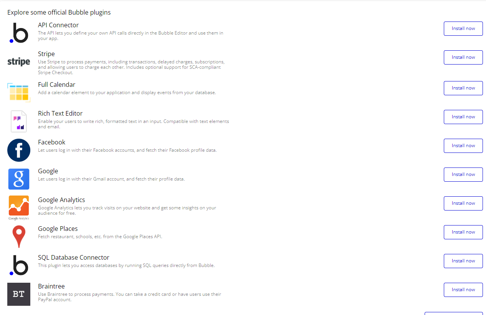

Le No-Code révolutionne le développement d'applications en offrant une approche simple et efficace, accessible à tous. Voici quelques-unes des fonctionnalités clés qui définissent cette méthode innovante :
Interface Visuelle Intuitive : Les outils No-Code offrent des interfaces conviviales et intuitives, permettant aux utilisateurs de naviguer facilement et de construire leurs applications avec confiance.
Drag and drop : Création des applications en déplaçant simplement des éléments visuels préconçus sur une interface graphique, sans nécessiter de compétences en programmation.
Intégration avec des services tiers : Les outils No-Code permettent l'intégration transparente avec une multitude de services tiers tels que les bases de données, les services de cloud et les API, pour étendre les fonctionnalités de vos applications.

Services Tiers de Bubble.io
Automatisation de processus : Simplification des tâches répétitives et améliorez l'efficacité en automatisant les processus grâce aux fonctionnalités avancées de No-Code.
Personnalisation : Adaptation des applications aux besoins spécifiques grâce à des options de personnalisation flexibles, permettant de créer des solutions uniques et adaptées aux entreprises.
Déploiement Automatique : Déploiement rapidement des applications sur différentes plateformes avec des fonctionnalités de déploiement automatique, permettant de mettre les produits entre les mains des utilisateurs en un rien de temps.
Avec le No-Code, la création d'applications n'a jamais été aussi simple et accessible. Libérez votre créativité et transformez vos idées en réalité, sans les tracas du codage traditionnel.